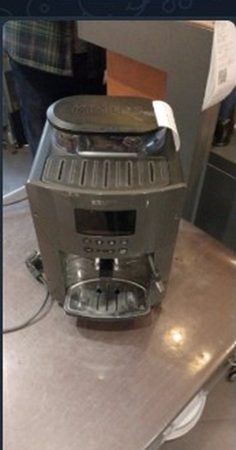

Z praxe · Fotodokumentace opravy
Opravy kávovarů Krups – červená kontrolka, hluk a dávkování
Ukázky tří odlišných servisních zakázek kávovarů Krups. K dispozici jsou fotografie přístrojů a původní popisy problémů.
Co bylo zdokumentováno
- Zakázka 1: silný hluk a káva sypaná mimo běžné místo.
- Zakázka 2: blikající červená kontrolka a nefunkční přístroj.
- Zakázka 3: problém s kvalitou připravované kávy.



Co si připravit před servisem
Před objednáním opravy Krups si poznamenejte přesný model a způsob signalizace chyby. Neprovádějte opakované násilné zásahy do mlýnku ani do spařovací mechaniky.